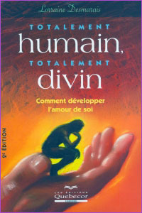

• Témoignage
• La guérison spirituelle
• La souffrance
• La route vers le oui
• Nos différentes voix
• Le développement de la personnalité
• Les conclusions erronées
• La voix de la conscience
• L’amour de la liberté
• Demandez et vous recevrez
• Les blessures et le structures de défenses
• Retrouver les conclusions erronées
• Briser les chaînes du passé
• Notre mur de protection et nos démons
• Transformer nos démons intérieurs
• L’acceptation
• Nos besoins fondamentaux
• Les pseudo-besoins
• Développer notre discipline
• Vers notre plein potentiel
• Le silence, la sagesse et l’intelligence du corps
• L’accompagnement
• Vivre ensemble
« Et un
jour, vous verrez que ce que vous appelez souffrance
est une expression de la Béatitude »
Arnaud Desjardins
La souffrance et la maladie sont souvent les facteurs
les plus susceptibles de nous guider vers une démarche en
conscience et en guérison.
Lorsque nous commençons notre démarche
de guérison, nous ne savons pas toujours par où débuter. Quoi
faire? Où aller? qui consulter? Nous sommes généralement
dans un état de profonde insécurité. Nous
nous sentons souvent impuissants, inquiets, perdus et parfois même
découragés. Peu importe la nature de notre souffrance,
qu’elle soit d’ordre physique, émotionnel ou
psychologique, nous souffrons et nous voulons trouver un remède à nos
maux. Nous voulons être soulagés et aidés
dans notre difficulté. Nous voulons que la souffrance
disparaisse. Nous voulons guérir. Lorsque nos difficultés
sont répétitives ou chroniques, nous sommes encore
plus en contact avec la nécessité de guérir
et de trouver une solution à nos malaises. Identifier
la ou les causes profondes de nos maladies n’est pas nécessairement
aussi simple que cela puisse paraître. La réalité est
d’un tout autre ordre. Nos malaises sont des guides pour
nous remettre en contact avec nous-mêmes. Ils sont
les signaux d’alarme qui nous disent d’arrêter
pour prendre le temps de regarder ce qui se passe. Malheureusement,
même si nous arrêtons et regardons, nous sommes parfois
complètement aveugles. Comment pourrions-nous savoir que
nous avons perdu contact avec notre réalité profonde
et que cette perte nous fait tant souffrir? Comment aurions-nous
accès à notre inconscient qui par définition
n’est plus dans notre conscience, accès à ces
blessures que nous avons oubliées, occultées, réprimées, étouffées
et entassées dans les coins obscurs de notre être
parce qu’elles nous était insupportables? Nous
nous retrouvons bien éloignés de notre cœur
et de ce que nous ressentons profondément. Nous sommes devenus
victimes de notre inconscient et nous ne trouvons plus la porte
d’accès. Nous souffrons sans savoir pourquoi
et nous ne comprenons pas le sens de notre souffrance.
La mise à jour de ce que nous avons enfoui
dans notre inconscient fera partie de notre guérison en
profondeur et la compréhension du fonctionnement de notre
ego amènera un éclairage nouveau sur notre façon
d’être en relation.
Nous avons, sans nous en rendre compte créé une
souffrance secondaire. La souffrance secondaire est la souffrance
causée par la réaction généralement
négative à notre souffrance. Je m’explique.
Si nous observons de près notre première réaction à la
souffrance et à nos malaises, nous voyons que nous les refusons.
Nous pourrions facilement traduire ce refus par : Non,
je ne veux pas sentir cela. Non, cela ne se peut pas! Ce « non » produit
une contraction dans notre corps physique de même que dans
notre corps psychique et émotionnel. Cette première
réaction à la souffrance et à nos malaises,
ce premier refus va se répéter chaque fois que
nous allons rencontrer la souffrance et la douleur. Nous
accumulons des refus et des tensions tout au long de notre vie. Cela
devient une habitude. Nous sommes convaincus que notre survie
dépend de notre capacité à nous défendre
contre la souffrance, à la nier.
Le refus : le non
La réalité, c’est que plus nous
refusons ce que nous ressentons, plus nous croyons que nous
sommes immunisés contre la souffrance et plus nous nous
enlisons dans cette négation. Plus nous nions notre
souffrance et ce que nous ressentons, plus nous développons
notre armure de défense et plus nous nous insensibilisons. Nous
construisons des couches et des couches de « non » et
de contractions dans nos différents corps. Parfois,
nous avons tellement perdu contact avec ce que nous ressentons
que même notre corps physique est insensibilisé. Nous
nous sommes peu à peu endurcis et déconnectés
de notre sensibilité, de notre corps et de notre cœur. Nous
sommes devenus méfiants et nous vivons aux aguets d’une
prochaine souffrance potentielle. Nous vivons en tension
perpétuelle. Nous fuyons nos tensions et l’anxiété qu’elles
créent dans toutes sortes d’activités. Nous
fuyons souvent notre souffrance dans « l’agir ». Nous
sommes de plus en plus inconfortables dans nos corps et pourtant
nous continuons à nier et à fuir la souffrance. Nous
cherchons sans arrêt à trouver de nouveaux moyens
pour éviter de souffrir. Nous avons perdu de vue que c’est
notre habitude de dire non à ce que nous ressentons
qui nous maintient dans cet état de souffrance, d’inconfort
et de malaises. Dès que nous ressentons un malaise, nous
essayons immédiatement de le faire disparaître et
nous contractons encore plus notre corps. Plus souvent qu’autrement
nous sommes convaincus que ce malaise est causé par les événements
extérieurs ou par les gens avec qui nous sommes en relation
plutôt que par notre peur de l’inconnu en nous. Nous
vivons dans un mode défensif et nous nous protégeons
contre tout ce qui vient de l’extérieur. Nous vivons
isolés, séparés, tendus, mal à l’aise
et pire encore, nous trouvons le moyen de continuer à nier
notre état. Nous prétendons que tout va bien et
que de toute façon nous ne pouvons rien changer à ce
qui est, que la vie est comme ça.
Peu à peu, nous réalisons que notre
souffrance et notre mal-être se reflètent dans tous
les secteurs de notre vie : dans notre travail, dans nos relations
sociales, familiales, intimes, dans notre état de santé,
dans nos habitudes de vie, etc. Partout, nous pouvons voir à quel
point nous sommes inconfortables et comment nous trouvons des pseudo-solutions
pour éviter de faire face à notre inconfort et à notre
négation.
Le plaisir et la souffrance
Lorsque nous vivons dans la négation, nous
sommes très malheureux. Nous vivons en état
de guerre et nous ne le savons même pas. Nous sommes
en guerre contre la vie , contre l’humanité.
Nous refusons d’être humains. Nous refusons cet
aspect de la vie humaine qui est faite de souffrance, de peines,
de déceptions, de pertes, de toute une panoplie d’émotions
et d’événements. Nous refusons le changement
et le mouvement, nous ne voulons que ce qui est agréable. Nous
ne voulons qu’une partie de la vie. Si nous voulons
guérir et nous transformer, nous sommes appelés à nous
ouvrir à l’autre moitié de la vie qui est aussi
l’autre moitié de nous-mêmes. La moitié qui
nous fait souffrir. La moitié que nous ne cessons
de fuir depuis notre premier souffle et même parfois avant.
Le chemin de la guérison et de la transformation
est un chemin d’unification vers l’acceptation de cette
autre moitié de la vie. C’est ce que tous les
chemins spirituels nous enseignent, l’acceptation totale
de ce qui est. Apprendre à dire oui à ce que nous
ressentons est la porte d’entrée de notre guérison.
Nous devons nous souvenir qu’il existe un état
de conscience où nous existons qui est au-delà du
plaisir et de la souffrance et qui englobe ces deux polarités :
le niveau de l’être éveillé à sa
nature véritable, un niveau de conscience ou la relation
sujet-objet disparaît. C’est le niveau où les
contraires sont réconciliés, où ils ne sont
plus séparés mais complètement unifiés
comme les deux côtés de la même médaille.
C’est le niveau de conscience qui unit. Dans notre conscience
dualiste, nous vivons toujours polarisés d’un côté ou
de l’autre de la médaille, dans la souffrance ou le
plaisir.
En vivant à partir d’un niveau d’une
conscience qui unit, nous apprenons à expérimenter
les opposés d’une façon harmonieuse. Nous
pouvons accueillir autant le plaisir que la souffrance et de cet
accueil, émergent une joie et une paix réelles;
la joie d’être en vie et de couler avec tous les changements
que la vie apporte; de faire partie intrinsèque de son mouvement
perpétuel, autant, au dehors de nous qu’en dedans
de nous; la joie de ne plus être séparés de
quoi ou de qui que ce soit; la joie d’être à l’aise
partout; la paix d’être enfin réconcilié et
réunifié.
Lorsque nous cessons de réagir négativement à nos
malaises, nous créons un climat d’accueil et de détente à l’intérieur
de nous-mêmes. Nous nous donnons un nouvel espace pour
exister et pour réellement explorer ce qui se passe en dedans
de nous. Nous nous plaçons dans un état d’écoute
et de réception. Nous cessons de subir pour nous ouvrir à une
nouvelle relation avec ce que nous ressentons et avec nous-mêmes.
Nous pouvons peu à peu diminuer notre réaction négative
et par le fait même, notre souffrance secondaire. Nous voulons
entrer en contact avec la blessure originelle pour la ressentir,
la vivre, l’intégrer et guérir. Notre souffrance
devient alors révélatrice et constructive.
Chaque fois que nous nous retrouvons face à nos
malaises et nos maladies, nous avons l’opportunité de
ne pas réagir comme nous avons souvent l’habitude
de le faire en nous éloignant du malaise, mais plutôt
de prendre contact avec notre malaise et d’y pénétrer.
Nous devrons ainsi apprendre à rester présents à l’intérieur
de nous-mêmes et de notre malaise. C’est
un apprentissage qui demande beaucoup de courage. La
peur qui accompagne ce que nous ressentons est parfois immense.
Il nous faut apprendre à rester au centre de nous-mêmes
malgré toutes les sensations désagréables
et les pensées qui vont alimenter notre peur.
DESJARDINS, Arnaud, LE VEDANTA ET
L’INCONSCIENT, Éditions La Table Ronde,
Paris 1978, p. 101